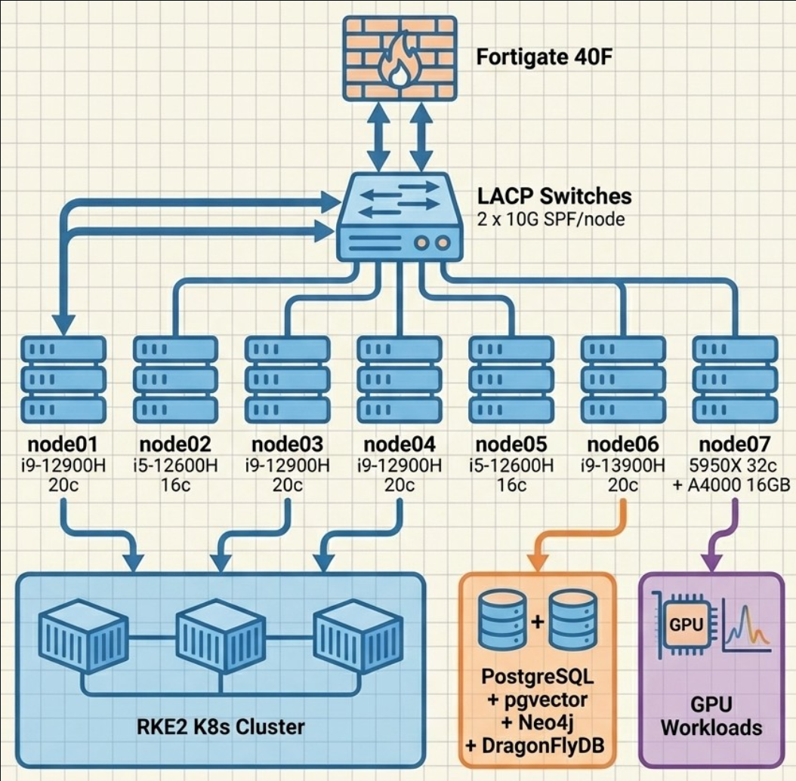

Research Platform
Enterprise-grade astronomical computing on a 7-node Proxmox cluster
Platform Architecture

The Proxmox Astronomy Lab is a production-scale computing platform built on a 7-node Proxmox VE cluster with hybrid RKE2 Kubernetes and strategic VM architecture. We're demonstrating that sophisticated astronomical computing doesn't require massive institutional resources — just smart engineering and open science principles.
Cluster Specifications
| Resource | Value |
|---|---|
| Nodes | 7 |
| Total Cores | 144 |
| Total RAM | 704 GB |
| Total NVMe | 26 TB |
| Network Fabric | 10G LACP per node |
| GPU | RTX A4000 16GB |
Node Inventory
View Node Specification Details
| Node | CPU | Cores | RAM | Role |
|---|---|---|---|---|
| node01 | i9-12900H | 20 | 96 GB | Compute (K8s) |
| node02 | i5-12600H | 16 | 96 GB | Light compute + storage |
| node03 | i9-12900H | 20 | 96 GB | Compute (K8s) |
| node04 | i9-12900H | 20 | 96 GB | Compute (K8s) |
| node05 | i5-12600H | 16 | 96 GB | Light compute + storage |
| node06 | i9-13900H | 20 | 96 GB | Heavy compute (databases) |
| node07 | AMD 5950X | 32 | 128 GB | GPU compute |
VM Inventory
View Virtual Machine Details
| VM | vCPU | RAM | Purpose |
|---|---|---|---|
| radio-k8s01 | 12 | 48G | Kubernetes primary |
| radio-k8s02 | 12 | 48G | Kubernetes worker |
| radio-k8s03 | 12 | 48G | Kubernetes worker |
| radio-gpu01 | 12 | 48G | GPU worker (A4000) |
| radio-pgsql01 | 8 | 32G | Research PostgreSQL |
| radio-pgsql02 | 4 | 16G | Application PostgreSQL |
| radio-neo4j01 | 6 | 24G | Graph database |
| radio-fs02 | 4 | 6G | SMB file server |
| radio-agents01 | 8 | 32G | AI agents, monitoring |
Architecture Highlights
- Hybrid K8s + VM: RKE2 for dynamic ML workloads, strategic VMs for databases
- PostgreSQL: Materialization engine for catalog joins and derived computations
- GPU Compute: RTX A4000 for ML training and inference
- 10G Network: 2x10G LACP per node for high-bandwidth data movement
Data Pipeline
PostgreSQL serves as the materialization engine where VAC joins and derived computations occur. Final ARD products are exported to Parquet for distribution. The pipeline manages ~32GB of catalog data and ~108GB of spectral tiles in Parquet format.